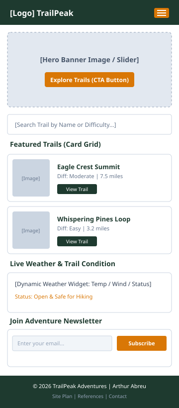
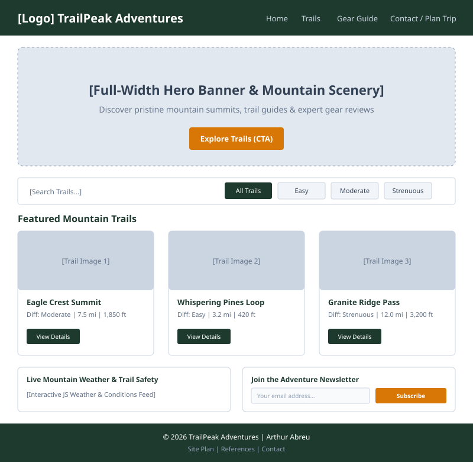

Site Name
TrailPeak Adventures
Reason for Selection: I chose the name "TrailPeak Adventures" because it immediately conveys an outdoor, active, and inspiring mountain expedition brand. The word "Trail" relates to hiking routes, trails, and paths for all skill levels, while "Peak" evokes reaching summits, personal achievement, and scenic viewpoints. It represents a welcoming and authoritative digital hub for hikers, trekkers, and nature explorers.
Optional Domain Availability: trailpeak-adventures.org
Site Purpose
The primary purpose of TrailPeak Adventures is to empower outdoor enthusiasts with reliable trail guides, interactive discovery tools, and preparation resources. The website will provide:
- Dynamic Trail Directory: An interactive catalog of curated hiking trails searchable and filterable by difficulty (Easy, Moderate, Strenuous), distance, and elevation gain.
- Gear & Preparation Guides: Essential packing lists, safety tips, and gear recommendations categorized by season and hike duration, featuring an interactive checklist tool.
- Community & Trip Planning: A responsive trip inquiry and feedback form where visitors can request guided excursions, share recent trail conditions, and save their favorite routes using browser storage.
Scenarios
The following scenario questions represent the core needs and inquiries of our target audience visitors:
- Scenario 1: "What are the best beginner-friendly hiking trails with panoramic summit views that I can complete in under 3 hours?"
- Scenario 2: "What essential safety gear, clothing layers, and hydration equipment do I need to pack for a high-altitude weekend trek?"
- Scenario 3: "How can I submit an inquiry for a guided group mountain expedition or report current trail conditions?"
- Scenario 4: "How do I filter trails by elevation gain and difficulty rating so I can train progressively?"
Color Schema
The color scheme is inspired by mountain forests, rocky peaks, and sunset horizons, establishing a balanced, outdoor-themed aesthetic that meets WCAG AA contrast standards.
Deep Forest Green
Primary Color: Used for header background, main headings (h1, h2), primary buttons, and footer.
Mountain Moss Green
Secondary Color: Used for subheadings (h3), card outlines, and secondary navigational elements.
Sunset Amber Gold
Accent Color: Used for Call-to-Action (CTA) buttons, active links, highlight borders, and badges.
Alpine Mist
Page Background: Used for page background color to provide a clean, soft canvas with high text contrast.
Typography
Two carefully paired Google Fonts are selected to ensure optimal readability, modern aesthetics, and strong visual hierarchy across all devices:
1. Montserrat (Sans-serif)
Application: Used for all page titles, section headings (h1, h2, h3, h4), navigation links, and prominent buttons.
Montserrat Bold: Discover Your Next Mountain Summit
2. Open Sans (Sans-serif)
Application: Used for all body paragraphs, trail descriptions, lists, tables, captions, and form inputs.
Open Sans Regular: Hiking through alpine forests connects adventurers with nature while building physical endurance and outdoor confidence. Every trail offers unique vistas, elevation profiles, and memorable milestones.
Wireframes
Below are the layout wireframe sketches for the TrailPeak Adventures Home Page, demonstrating the responsive design across mobile and desktop viewports.

